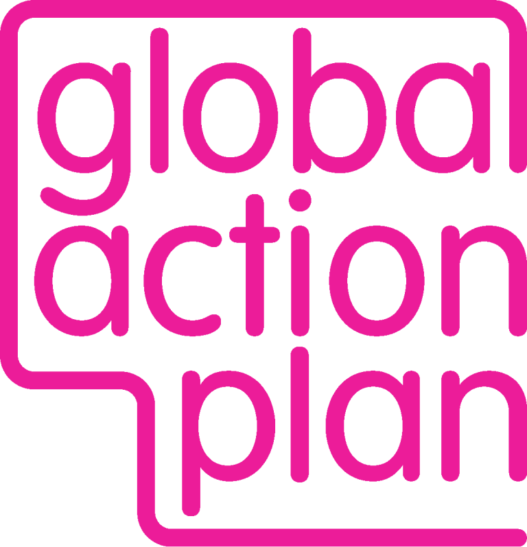

Resources
A selection of organisations campaigning for clean air.
Organisations who focus specifically on pollution from domestic wood burning.
|
|
Communities Against Woodsmoke
This grassroots organisation supports people experiencing the health impacts from woodsmoke pollution and campaigns on both local and national levels for legislation to reduce solid fuel burning. |

|
Doctors and Scientists Against Wood Smoke Pollution (DSAWSP)
Formed in 2016, DSAWSP is an international coalition of doctors, scientists and others dedicated to reducing harm to human health and the climate by decreasing wood burning. Their Stories section shares testimonies from people worldwide whose health has been affected by wood smoke pollution. |
Organisations campaigning for clean air.
|
|
Asthma + Lung UK
Asthma + Lung UK campaign locally and nationally for urgent action to clean up toxic air. They influence government policy, protect people in the most polluted communities, raise awareness of health impacts, and support those affected by lung conditions through stronger laws, cleaner transport and fairer policies. |
|
|
Clean Air Fund
A global philanthropic organisation funding clean-air campaigns, research, policy change and community projects around the world to reduce pollution and protect public health. |
|
|
Clean Air London
Campaigns for stronger clean-air laws and strict enforcement of legal pollution limits across London. They push for policies that cut emissions from transport, wood burning and other major sources while holding leaders to account for delivering cleaner air in every borough. |
|
|
ClientEarth
An environmental law charity using legal action to compel governments and companies to clean up air pollution. They have won major cases forcing stronger UK and EU action on illegal pollution levels. |
|
|
Friends of the Earth
Friends of the Earth UK works for cleaner air by pushing for stronger national targets, supporting local action, and tackling the biggest pollution sources. They help people monitor local air quality, challenge decision-makers, and call for policies such as more Clean Air Zones, faster phase-out of diesel, better public transport and a new Clean Air Act. |
|  |
Global Action Plan / Action for Clean Air
Supports communities to measure and understand local pollution, works with businesses to reduce emissions, and runs national public-awareness initiatives such as Clean Air Night. |
|
|
Greenpeace
Campaigns globally for cleaner transport, reduced fossil-fuel use and environmental justice. Their clean-air work includes investigations, public campaigns and pressure on governments to adopt strong air-quality laws. |

|
Healthy Air Coalition
A collective of leading health, environment and transport organisations with the shared vision of a UK free from toxic air. |

|
Impact on Urban Health
Works to improve health in cities by tackling environmental inequalities, including air pollution. They support research, community projects and policy change in high-pollution urban areas. |
|
|
Mums For Lungs
An organisation of people across the UK campaigning for cleaner air to improve children's health. They raise awareness of the health impacts of air pollution and champion effective solutions for tackling it. |
|
|
Royal College of Paediatrics and Child Health (RCPCH)
Highlights air pollution as a serious threat to children's health and calls for stronger UK policies to reduce exposure. The college advocates for stricter regulation, better monitoring near schools, support in deprived communities, and provides paediatricians with training and resources to address air quality in clinical practice. |
|
|
Royal College of Physicians
Focuses on air quality alongside other key determinants of health, and leads the Inequalities in Health Alliance to make the case for a cross-government strategy that reduces health inequalities and addresses the social drivers of ill health. |
|
|
World Health Organization (WHO)
Sets global air-quality guidelines, publishes research on the health impacts of air pollution, and supports governments worldwide as they work to reduce exposure and improve environmental health. |